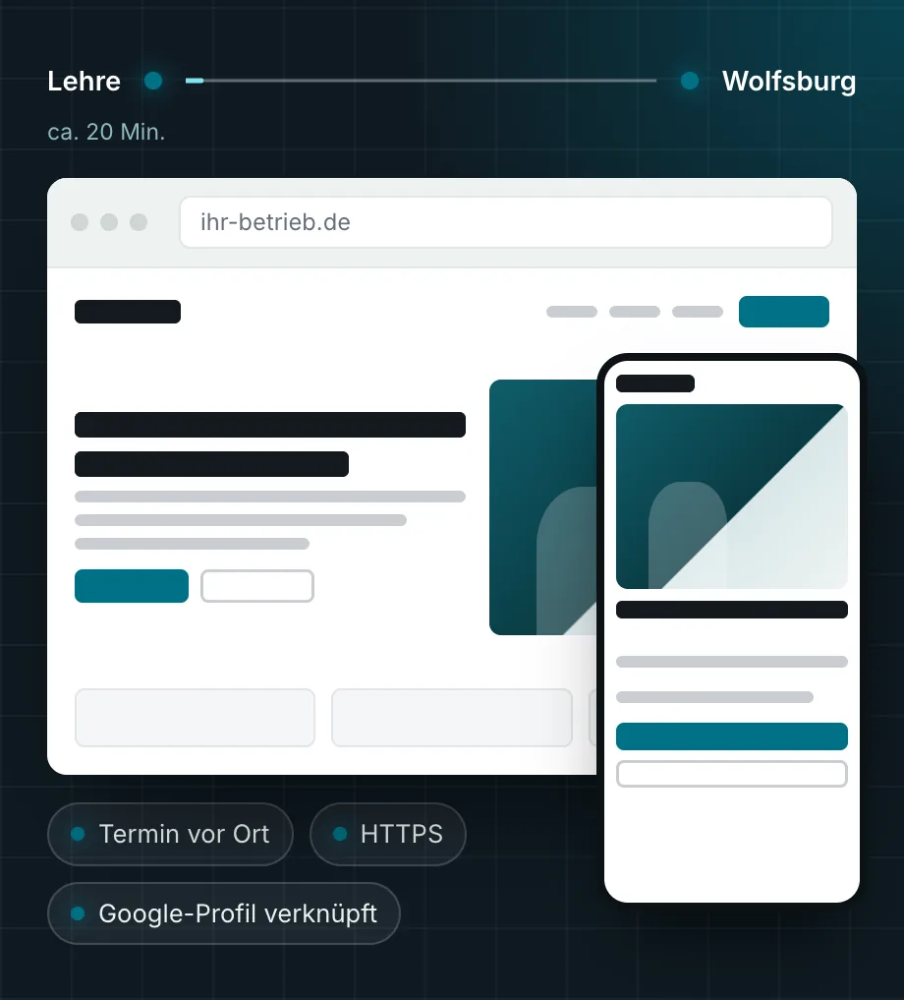

Webdesign in Wolfsburg, geplant bei Ihnen im Betrieb.
Für das erste Gespräch kommen wir zu Ihnen nach Wolfsburg. Danach bauen wir Ihre neue Website und richten das Google-Unternehmensprofil passend dazu ein. Auf Wunsch pflegen wir beides weiter, damit Angaben und Technik aktuell bleiben.
- ca. 20 Min.
- von Lehre nach Wolfsburg
- 500+
- Unternehmen betreut, seit 2002
- Festpreis
- nach dem Erstgespräch
Webdesign in Wolfsburg für Betriebe mit veralteter Website
In vielen Betrieben ist die Website vor Jahren entstanden, oft nebenbei und ohne festen Verantwortlichen. Seitdem haben sich Leistungen, Telefonnummern und Öffnungszeiten geändert, die Seite aber nicht. Im Alltag fällt das kaum auf, bis ein Interessent nachfragt, ob die Angaben noch stimmen.
Zwischen Braunschweig und Wolfsburg arbeiten viele Unternehmen für die Automobilindustrie. Auch wer seine Aufträge vor allem von wenigen großen Abnehmern bekommt, wird im Netz angesehen. Neue Einkäufer schauen auf die Website, ebenso Bewerber und Firmen, die einen Dienstleister in der Nähe suchen. Für Handwerksbetriebe, Kanzleien und Händler gilt das genauso.
Wir gehen an eine Website so heran wie an jedes andere IT-Projekt. Wir sehen uns die Lage bei Ihnen an, bauen eine saubere Lösung und bleiben danach zuständig. So bleibt die neue Seite nicht wieder jahrelang liegen.
Was wir für Ihre Website in Wolfsburg übernehmen
Termin bei Ihnen vor Ort
Wir kommen nach Wolfsburg, lernen Ihren Betrieb kennen und klären, wer über die Website anfragen soll und was diese Menschen vorher wissen wollen.
Eine Seite je Leistung
Was Sie anbieten, steht nicht in einem langen Absatz. Jede Leistung bekommt eine eigene Seite mit Umfang, Einsatzgebiet und direktem Kontakt.
Google-Unternehmensprofil
Wir richten Ihr Profil ein oder bringen es auf Stand, mit Kategorie, Leistungen, Öffnungszeiten, Bildern und Link zur Website. So passen Karte und Website zusammen.
Texte aus dem Gespräch
Aus dem Termin entstehen die Texte. Sie lesen jede Seite gegen, bevor sie online geht. Leistungen und Zertifikate nennen wir nur, wenn Sie sie bestätigt haben.
Schlanke, sichere Technik
Kurze Ladezeiten, verschlüsselte Verbindung und keine Erweiterungen, die mit den Jahren veralten und zur Sicherheitslücke werden.
Laufende Pflege
Nach dem Start bleiben wir zuständig, für Updates, Datensicherung, neue Leistungen oder geänderte Öffnungszeiten. Ein Anruf in Lehre genügt.
Website, Google-Profil und Pflege
Webdesign rechnen wir zum Festpreis ab. Sie bekommen das Angebot schriftlich, bevor wir anfangen, und entscheiden dann in Ruhe.
Website
Für Betriebe, die eine neue Seite brauchen oder die alte ersetzen wollen.
- Startseite und eine Seite je Leistung
- Kontaktwege auf jeder Seite, Telefonnummer zum Antippen
- Impressum und Datenschutz eingebunden
- Alte Adressen sauber auf die neuen Seiten umgeleitet
Festpreis nach dem Erstgespräch
Website mit Google-Profil
Für Betriebe, die bei Suchen in Wolfsburg und im Umland auftauchen wollen.
- Alles aus „Website“
- Google-Unternehmensprofil neu angelegt oder überarbeitet
- Gleiche Angaben auf Website und Profil
- Google Search Console eingerichtet
Festpreis nach dem Erstgespräch
Pflege
Damit Website und Profil nach dem Start nicht wieder veralten.
- Updates, Zertifikat und Datensicherung
- Änderungen an Texten, Bildern und Öffnungszeiten
- Fehler und Angriffe regelmäßig geprüft
- Ein Ansprechpartner in Lehre für alle Fragen
Monatlicher Festpreis
So entsteht Ihre Website, Schritt für Schritt
Den ersten Termin machen wir in Wolfsburg. Alles Weitere begleiten Sie vom Schreibtisch aus.
Gespräch in Ihrem Betrieb
Wir sehen uns an, was Sie machen, wer anfragen soll und was an der jetzigen Seite fehlt. Auf Wunsch geht das auch per Video.
Angebot mit Festpreis
Sie bekommen Seitenplan, Umfang und Zeitplan schriftlich, dazu den Festpreis.
Vorschau und Freigabe
Über einen Vorschau-Link sehen Sie die Website auf Handy und Bildschirm. Ihre Anmerkungen setzen wir um, bis alles stimmt.
Start mit Profil
Wir schalten die Website frei, verknüpfen das Google-Profil und melden die Seite bei Google an. Danach übernehmen wir die Pflege, wenn Sie das möchten.
Karte und Website müssen dasselbe sagen
Bei Suchen mit Ortsbezug zeigt Google häufig eine Karte mit Unternehmensprofilen über den übrigen Treffern. Von dort klicken Interessenten auf Ihre Website oder rufen direkt an. Steht im Profil eine andere Telefonnummer als auf der Website oder fehlen Leistungen, wirkt das unsicher, und der Anruf geht leicht woanders hin.
Deshalb behandeln wir beides als ein Projekt, mit denselben Angaben, denselben Leistungen und denselben Öffnungszeiten. Ändert sich etwas, passen wir Website und Profil gemeinsam an.
Die neue Website ist die Grundlage. Wer danach gezielt bei Google weiter nach oben möchte, findet das unter SEO & Local SEO, auf Wunsch auch mit Erfolgsbeteiligung. Was Sie dafür tun können, dass ChatGPT und andere KI-Assistenten Ihren Betrieb richtig wiedergeben, steht unter GEO.

Von Lehre in etwa 20 Minuten bei Ihnen
Unser Sitz liegt in Lehre, Berliner Straße 60. Nach Wolfsburg und Königslutter sind es etwa 20 Minuten, nach Gifhorn und Helmstedt etwa 30. Ein Termin bei Ihnen ist für uns also schnell gemacht, und Sie müssen Ihren Betrieb niemandem am Bildschirm erklären.
Seit 2002 haben wir als IT-Systemhaus mehr als 500 Unternehmen betreut. Die meisten haben zwischen 10 und 250 Mitarbeitende, und mehr als die Hälfte ist seit über fünf Jahren bei uns. Betreuen wir bereits Ihre IT, etwa über den IT-Service in Wolfsburg, haben Sie für Website, E-Mail und Technik einen Ansprechpartner.
Was wir für Zulieferer der Automobilindustrie sonst übernehmen, steht auf der Seite für Automotive-Zulieferer. Einen Überblick über alle Leistungen rund um die Website finden Sie unter Webdesign. Für Betriebe in Braunschweig gibt es eine eigene Seite zum Webdesign in Braunschweig.
Fragen zum Webdesign in Wolfsburg
Kommen Sie für das Erstgespräch nach Wolfsburg?
Ja. Von unserem Sitz in Lehre sind es etwa 20 Minuten, deshalb führen wir das erste Gespräch gern in Ihrem Betrieb. Wenn es für Sie einfacher ist, sprechen wir per Video.
Was kostet eine neue Website?
Den Preis bestimmen Umfang und Inhalt, also wie viele Leistungen eine eigene Seite brauchen, ob wir die Texte schreiben und ob das Google-Profil dazukommt. Nach dem Erstgespräch nennen wir Ihnen einen Festpreis, schriftlich und vor dem Start. Die Pflege danach läuft zu einem monatlichen Festpreis.
Richten Sie auch unser Google-Profil ein?
Ja. Wir legen das Profil neu an oder überarbeiten ein bestehendes und gleichen die Angaben mit der Website ab. Die Bestätigung, dass der Betrieb Ihnen gehört, verlangt Google in der Regel direkt von Ihnen. Dabei begleiten wir Sie.
Wir arbeiten vor allem für einen großen Abnehmer. Brauchen wir trotzdem eine gute Website?
Meist ja, nur aus anderen Gründen. Neue Einkäufer, Bewerber und mögliche weitere Kunden sehen sich oft zuerst Ihre Website an, bevor sie Kontakt aufnehmen. Eine klare Seite mit Leistungen, Standort und Kontaktdaten erleichtert diesen ersten Schritt, gerade wenn Sie unabhängiger von einem einzelnen Kunden werden wollen.
Können wir die Website später selbst ändern?
Kleine Änderungen übernehmen wir im Rahmen der Pflege, ein Anruf oder eine E-Mail reicht. Wenn Sie bestimmte Inhalte regelmäßig selbst pflegen möchten, zum Beispiel Stellenanzeigen oder Neuigkeiten, klären wir im Erstgespräch, wie das am einfachsten geht.
Wer kümmert sich nach dem Start um Hosting, Domain und E‑Mail?
Auf Wunsch wir. Als IT-Systemhaus betreuen wir Server, Postfächer und Zertifikate ohnehin. Für Website, Google-Profil und E-Mail haben Sie dann eine einzige Stelle, die Sie anrufen.
Passt oft dazu
Neue Website für Ihren Betrieb in Wolfsburg?
Schreiben Sie uns kurz, was Ihr Betrieb macht und was die Website leisten soll. Wir melden uns zu unseren Geschäftszeiten und schlagen einen Termin bei Ihnen vor.
- Telefon, Mo–Do 8:30–17:00 Uhr, Fr 8:30–15:30 Uhr05308 935030
- E-Mailinfo@stkom.de
- AdresseBerliner Straße 60, 38165 Lehre